Hi, I am nmint (or mint, or minty). I sometimes draw and produce experimental music (by the guidance of the creature).
My art style can be boiled down to using a pixelated brush, drawing eyes in a certain way, drawing bodies really slim and being horrible at drawing.
Here are some examples of my art:
I used to make games. Now I don't. Solo gamedev is just pure agony.
Anyway, here are some games that I've made and released:
I release music under the alias of mekkamuss (who is also the creature in question).
Music style ranges from dark ambient, techno and electronic music with occasional FM-synthesis funkiness to full-on industrial noise.
Every release comes with a friendly reminder that this is normal music. :)
As of now, there are 18 releases (Collections, EPs, Albums, Standalone tracks).
| Year | Title | Tracklist | Genre | Links |
| 2022 | 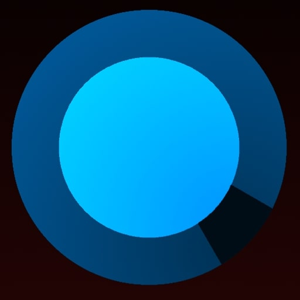 NSE |
1.NSE-01 2.NSE-02 3.NTIN |
Ambient | __ |
| 2023 | 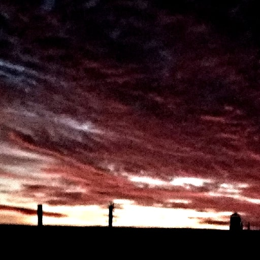 False Reality |
1.FR3 (Pt.1) 2.FR3 (Pt.2) 3.push_through 4.Transpose the Timeline 5.Indecisive Decadant Dance 6.The End of the Industrial Limbo |
Techno, Ambient | __ __ |
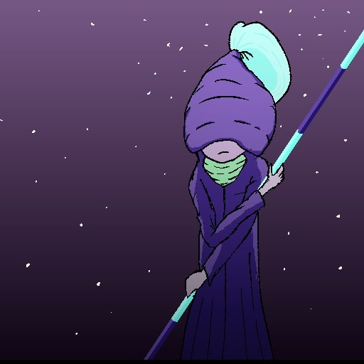 Depth Zero OST |
1.Starfall in a Bubble 2.Banks of the Mystic Filth 3.The World Above 4.You are on your way to Depth 0 5.Neutron Star |
Electronic | __ | |
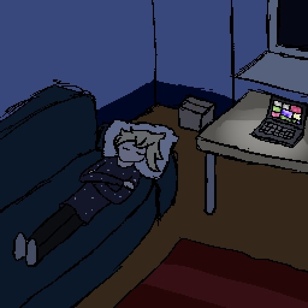 Mangled Night Collection |
1.melancholic_altercation 2.we_are_here_to_stay_forever 3.vocode_and_roll 4.three_quarters_pass_by 5.rest_extra |
Techno, Ambient | __ __ | |
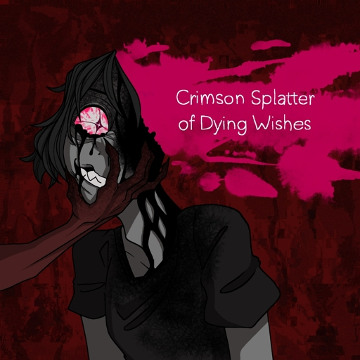 Crimson Splatter of Dying Wishes |
1.Zero's Last Dance 2.Depraved Desperation 3.Expired Sorrow 4.One Last Wish |
Industrial Techno | __ __ | |
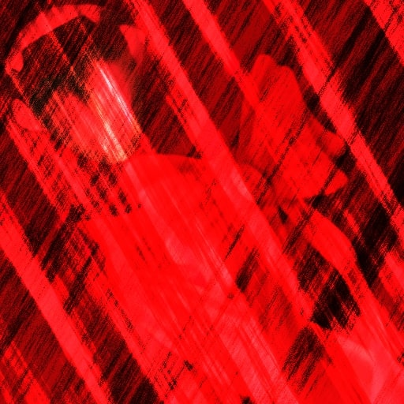 CURE FOR INSOMNIA |
N/A | Single track / Megamix |
__ | |
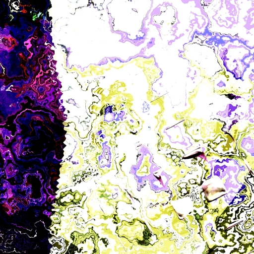 nizm-75 |
N/A | Single track / Harsh Noise |
__ __ | |
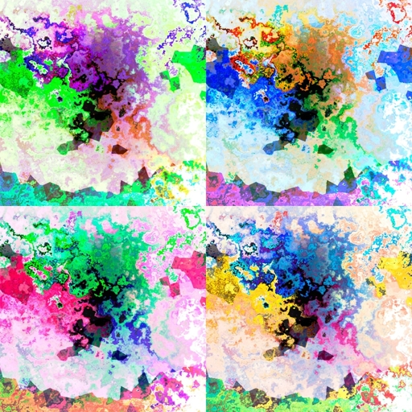 Catatonic Movements Vol.I |
1.Symmetric Vowels 2.Dead Carapace 3.Volatile Compound 4.Swerving Grounds |
Electronic, Synthrock |
__ __ | |
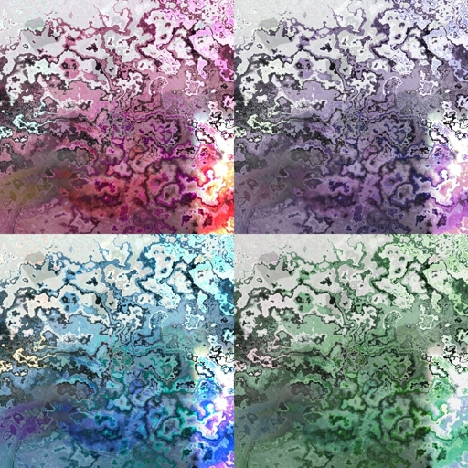 Catatonic Movements Vol.II |
1.Rolling Clownade 2.Rancid Dawn 3.Cascade Trauma 4.Post-Cascade Trauma |
Electronic, Synthrock, Post-IDM |
__ __ | |
| 2024 | 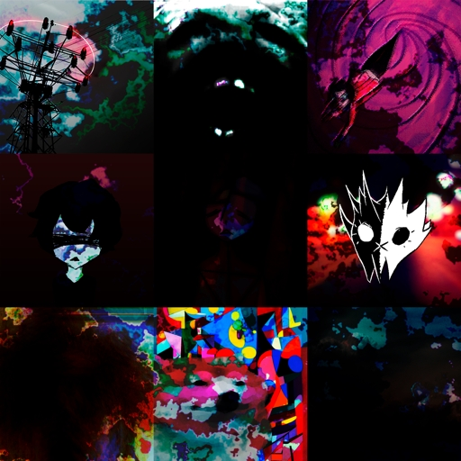 MKMS-2022 |
1.QQQ.232 2.FFK.232 3.88-88 4.Fate Select 5.To The Apathy Within Us (Pt.1) 6.To The Apathy Within Us (Pt.2) 7.Extraction 6.6 8.zhidki_bred 9.Digital Psychotropes 10.Little Lavender Community 11.Verber 12.Night Chase 13.FONDER 14.glAZA |
Archival Collection (2022) |
__ |
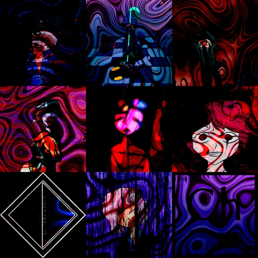 MKMS-2023 |
1.ADDELAE 2.Chugunium 3.Object Deprecation 4.Thank You For Being Yourself 5.Canned Orange 6.blemishes 7.Paradise Ruptures 8.Exiles in the Storm 9.Your Greater Cause 10.God Has Sent You To Your Death 11.Carrion Sighting 12.Bludgeon To All Evil 13.CONQUEST 14.FFK.232.REMIX |
Archival Collection (2023) |
__ | |
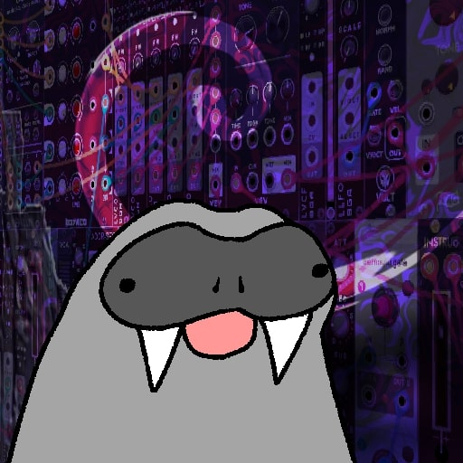 MINIWALRUS |
1.MINIWALRUS-CF1F81 2.MINIWALRUS-FD02D7 3.MINIWALRUS-AC8F79 4.MINIWALRUS-10E2D4 5.MINIWALRUS-0649FD 6.MINIWALRUS-F490AE |
Harsh Noise | __ | |
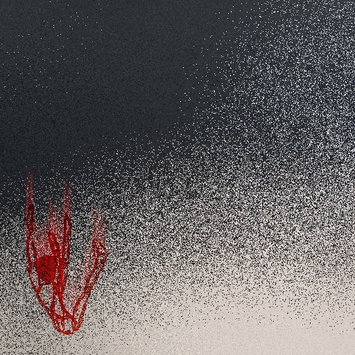 ANEMIA |
1.ANEMIA-3D0D48 2.ANEMIA-0DA735 3.ANEMIA-3926EC 4.ANEMIA-A23539 |
Harsh Noise | __ __ | |
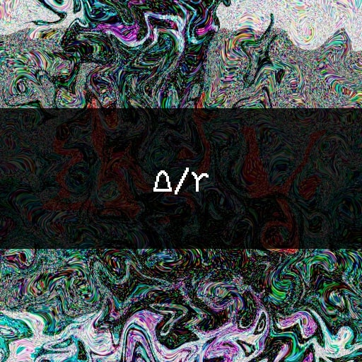 GRIT/AFFECTION |
1.monocarbonized 2.omnisocial 3.GRIT 4.blissful, euphoric 5.AFFECTION |
Harsh Noise | __ | |
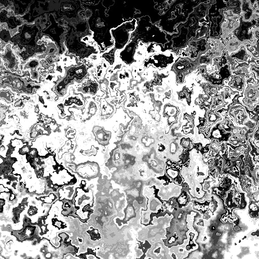 ODE-I |
1.DECA 2.Flock of Minotaurs 3.Entr0 4.CPAK 5.Kanaxia 6.Odds in Pairs |
Industrial Techno | __ | |
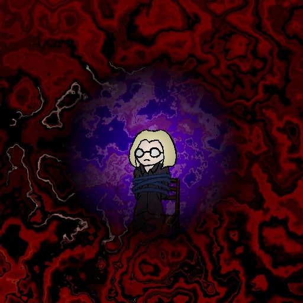 Various Flavours of Mint |
1.At Dismay 2.Inhuman Hatred 3.Snake Pit 4.Ill-Advised 5.Self-Reflection 6.Absence of Elysium |
Dark Techno, Industrial Techno Noise Techno |
__ | |
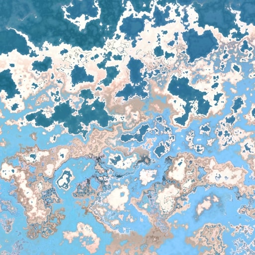 DOUBLE WS-ZIUM |
1.Nuclear Meltdown 2.Overgrowth 3.Morgue Rave 4.Mass Fallout |
Harsh Noise | __ __ | |
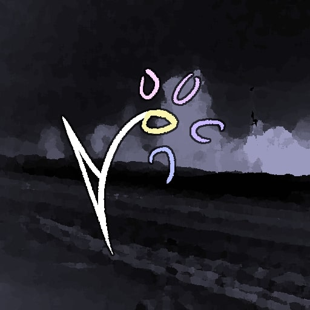 Restoration-Desecration Clause |
1.sense disruption 2.sense consolation 3.do you copy? 4.new grit 5.restoration clause 6.desecration clause 7.infinitum cyclum ineptias 8.a grueling end |
Harsh Noise | __ |
Aside from being a "stage name" of sorts, mekkamuss is also an original character in his own right. However, there is not much to it as of right now. Someday I'll have a "tumblr moment" and make a full-fledged spreadsheet detailing everything up to the colour of his underwear.
Right now he is a noise creature, who smiles and bleeds a lot. And I love him that way.
ANEMIA is a harsh noise collection of tracks and by god, this is the best hour of your life you can ever have on this planet. This is my favourite collection and every subsequent release just sits in it's shadow.
Tracks from this collection come from a single patch with 2 instruo saïch VCOs being parsed into various distortion modules and coming out of either Plateau reverb or Chronoblob delay module.
This setup produces otherworldly sounds, that can and WILL blow your mind. Don't take my word on how good this album is, it recieved multiple awards and praises by music connoisseurs all over the world.
ANEMIA has won the following awards:
I started making music back in 2018 on LMMS (shittiest DAW known to mankind). Most of the music from back then was unfinished and got lost to time. Out of 35 estimated tracks, only 26 have survived in a form of MP3 files with various quality.
However, none of these tracks have been released to the public but instead shared around with a close circle of friends.
The music from this era can be described as "non-bound to any one specific genre" and "noticeably amateur". Among the smelly unlistenable tracks there are some gems that I'd love to recreate someday.
Notable tracks:
This era also sees me dabbling into chiptune/tracker music. Specifically music made with LSDJ (a GameBoy based tracker). There are only 5* tracks made by me with LSDJ.
Most notable of which are: Frenzy for being the first released mekkamuss track ever and Velvet Garden OST (which i count for 1 track) for being an OST to a neat game.
To be honest, all of the LSDJ tracks are fine. Despite me using simple techniques they still sound catchy.
One morning in August 2022 I've decided that I want to make music again and in a new way. I've taken interest in modular synths before from videos of LMNC and MycoLyco so I've decided to approach making music in modular.
Modular synths are mad expensive so I've started with a free and digital alternative - VCV Rack. Learning the basics of modular was rather easy and so, my first somewhat coherent modular track was born:
QQQ.232 - a basic track that features basic interchangeable beat paired with a Plaits oscillator (with no effects, mind you), which gets very angry at the halfpoint of the track. A sound that feels iconic to me.
On the October 10th, 2022 mekkamuss youtube channel was created with a first uploaded track being FFK.232 - a derivative of QQQ.232, spanning over 9 minutes with the same agressive Plaits oscillator starting at around 2 minute mark
and going for 7 minutes. Pure joy to listen to even after 2 years, another iconic mekkamuss track. Year 2022 saw the release of 16 mekkamuss tracks and 1 collection.
The very beginning of 2023 saw the release of False Reality EP, where every track was released over the course of a week. Overall a solid release.
Then, in Feburary I've decided to participate in a game jam. Despite the game being 'eh.' at best, I've decided to go hard on OST. January to May was the worst period for individually released tracks. Most of them were bad or, at best, unremarkable.
The only notable tracks from that period were Chugunium and Canned Orange for using a bunch of sub-optimal mixing techniques but sounding unique because of it.
March to April in particular can be defined as the worst two months for mekkamuss, and even worse two months for me personally. This period can be defined by my will to collaborate with people and make music for them.
Long story short, out of three tracks made in this period, all three have been returned back to me. All bad things come to the end and May saw one of the best collections being released: Mangled Night Collection.
Summer of 2023 started off slow. Partially due to me partaking in two of my favourite activities: trying not to die from heat and rotting in bed, everything that went down in spring sapped any will for me to do anything. July saw a weak release of Crimson Splatter of Dying Wishes EP and a special release of Paradise Ruptures - an 18 minute track that was generated all by itself without any input from me, featuring a cheeky FFK.232 synth. August 21st saw the release of CURE FOR INSOMNIA - an hour long megamix track, consisting of 12 recordings stapled together. Huge landmark in mekkamuss' discography.
September 1st, 2023. I've released nizm-75 - a 20 minute pure harsh noise track, mixing droning oscillators, pseudo-random percussive sounds, high-pitched bleeps, chaotic noise and vocoded noise together.
Rest of the year 2023 saw the release of Catatonic Movements vol.I and vol.II. The defining characteristic of this collection is synths that resemble electric guitars with different distortion values, a little noise and overall weirdness.
Year 2023 saw the release of 47 mekkamuss tracks and 7 collections.
Year 2024 started with me combining all individually released tracks into 2 collections: MKMS-2022 and MKMS-2023. To fill in the gaps in the collection I had to rerecord/remaster some of the tracks, namely: QQQ.232 (2022), glAZA (2022), CONQUEST (2023), FFK.232.REMIX (2023). I've also stopped releasing tracks individually, instead packing them into collections/EPs exclusively. First two proper collections were MINIWALRUS and ANEMIA both released in January and both having the same idea - using the same patch for all the tracks in a collection. This was an experiment to test how many different sounds can I get from a fixed patch. You can see more information about ANEMIA in particular in an article above. February saw the release of GRIT/AFFECTION. This time it's five(six) tracks, two patches. This release is pretty much unremarkable. Most of my efforts gone to mashing together another collection - ODE-I. This collection mostly contains tracks from 2023 being remastered, namely the first track DECA, which is basically a 20 minute megamix track within an album. It took me around 3 months to finally record the final version of this track, that I was satisfied with. The other notable track is Odds in Pairs, which uses no more than 2 audio tracks at a time. These two tracks are my favourites from this collection.
Month later, in March, the Various Flavours of Mint collection was released. Unlike previous 3 collections, this one contains techno/electornic/insertarandomwordhere-core tracks with various levels of distortion applied to it. First three tracks start off strong in that regard,
blasting the listener with distorted bass, kicks, synths mixed in a cauldron of saturation. We define stuff like this as "CHUGUN" out here. The latter three tracks have more vibe to them and distortion doesnt want to actively murder it's listener. :)
At the end of March DOUBLE WS-ZIUM was released, bearing same ideas as MINIWALRUS and ANEMIA. This time the fixed patch was much simpler: 2 VCOs going through waveshaper, wavefolder, distortion and delay. Despite the simplicity of this patch, it can produce quite inriguing sounds.
And it does, this entire collection of tracks can be characterised as "anxiety-indusing" whether it's first track's nuclear powerplant failure vibe, second track's falling planes vibe or third track's squeaky sudo-techno beat.
April 13th marks the latest mekkamuss release - Restoration-Desecration Clause with overall thematic being "patching up what we've neglected before" and "dragging into the mud whatever we've cleaned before". This is the first collection to use a fairly common harsh noise technique called "feedbacking",
where the sound source is being fed back into itself, creating all kinds of different textures. This is an all-around solid collection. Every track has it's own unique texture and characteristic. Overall this collection uses recordings from 3 different patches.
Next release is planned to be a "vibe techno" sort of deal with percussion, crying synths and a small sprinkle of noise.
I am also pondering the idea of doing a fixed-patch ambient collection. To be on the opposite side of the fence from all the ANEMIAs and MINIWALRUSes.
Right now I'm waiting to start a new project - a DIY MIDI controller. I want this project to work, because there is no controller on the market with 16 potentiometers and nothing else. Also failing this project might resume my descend into the fucking downward spiral.
Also I really want to dabble into producing noise in an analog way, however my doubts are delaying that idea from becoming reality. Maybe mekkamuss will be real? Maybe I will finally kill mekkamuss and start a new project, which would be defined by unapologetic, hardcore, analog noise? Who knows.
:)